シーン挿絵の前段の「世界観確立画」です。村・大灯・街道・隊商・交易街などの舞台と、翳り(灰)・敵勢力の雰囲気を確立します。 採否は人間レビュー。OKのカットを次フェーズでシーン挿絵の世界観土台(構図・色・建築の参照)にします。人物はあえて入れていません(情景確立が目的)。
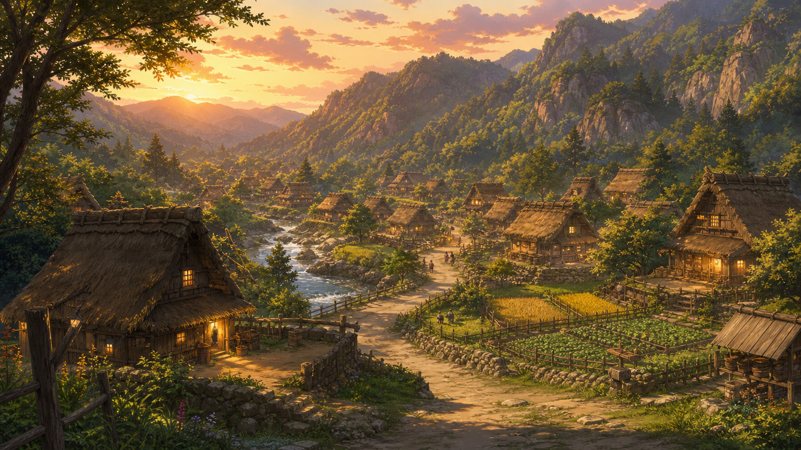
1536x864
A medieval mountain-valley village of wooden cottages with thatched roofs nestled in a green river valley between forested mountains, narrow dirt lanes, small fields and stone walls, a few warm lamps beginning to glow in the late afternoon golden light. Pre-modern rustic style, peaceful homely frontier village.
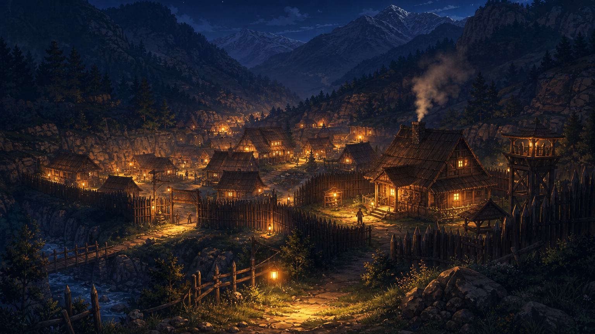
1536x864
The same mountain-valley village at night, the wooden cottages and a defensive wooden palisade lit only by warm amber flame-light and hanging lamps that push back the surrounding darkness, deep cool blue night beyond the glow, smoke rising from a chimney. The warmth of the flame is the only thing holding back the dark.
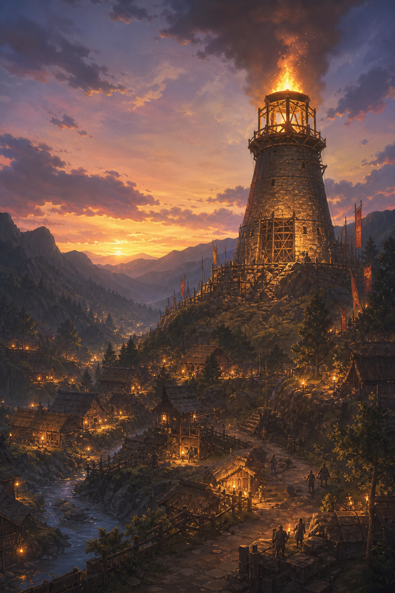
1024x1536
An old rustic stone-and-timber beacon tower (a 'great-lamp') with rough masonry and wooden scaffolding standing on a rise above the village, a large warm flame burning brightly at its top, casting golden light over the valley at dusk. The heart and pride of the village.
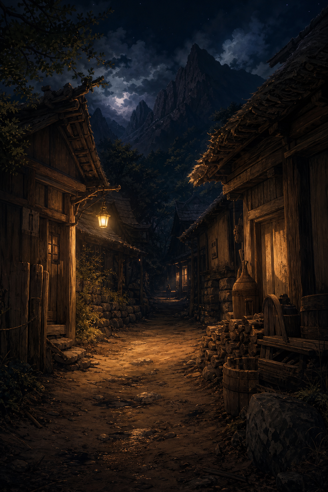
1024x1536
A narrow rustic village alley between wooden cottages at night, uneven dirt ground, warm scattered lamplight from a single hanging lantern falling into deep shadow, a sense of something lurking in the darkness at the far end. Tense, quiet, nocturnal.
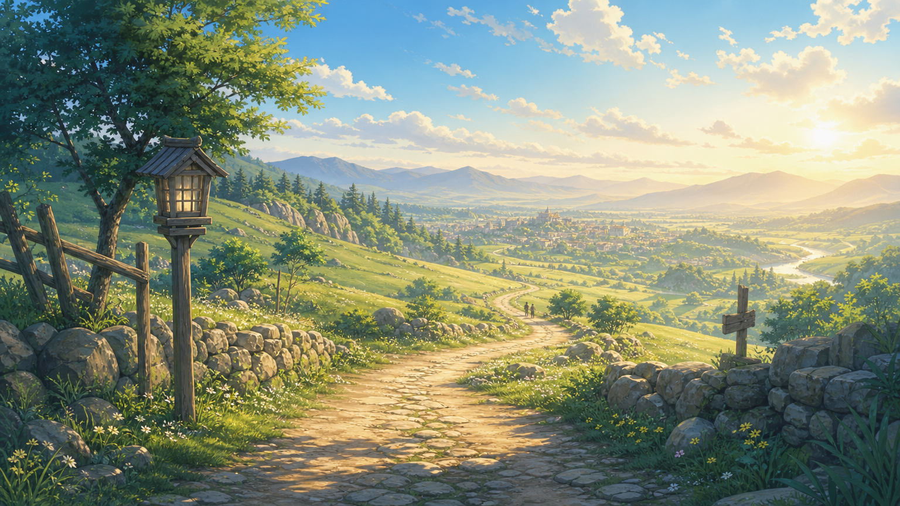
1536x864
A pre-modern country road of packed dirt and stone winding over gentle green grassy hills under a soft pale morning sky, low stone walls along the verge, a distant valley town faintly visible far ahead on the horizon. Open, hopeful, the start of a journey.
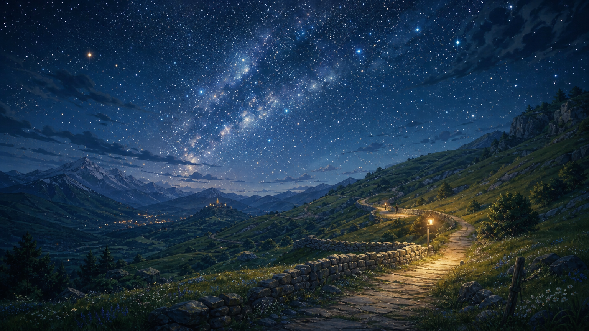
1536x864
The same winding country road over grassy hills at deep night under an overwhelming sky full of stars and a faint glowing band of the milky way, the road pale in the starlight, low stone walls, a lonely vast quiet beauty. A single faint warm lamp glow somewhere along the road.
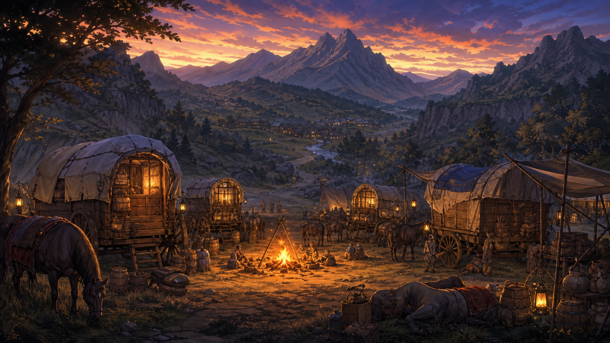
1536x864
A merchant caravan of wooden covered wagons with cloth tarps drawn up in a roadside grassy hollow at dusk, a warm crackling campfire in the middle throwing golden light, bundles of trade goods, draft animals resting nearby, rustic pre-modern traders' encampment. Warm, lived-in, the safety of fire on the road.
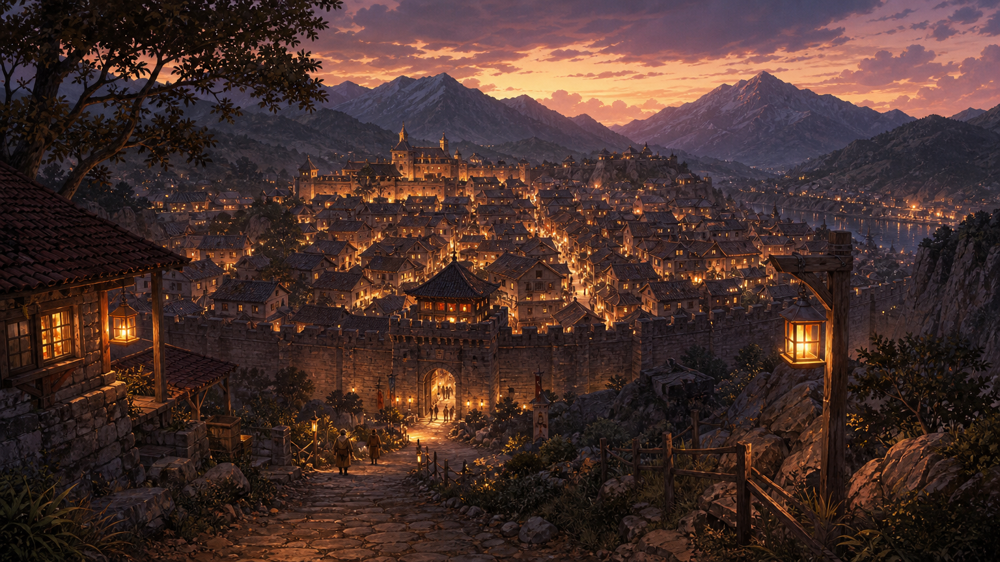
1536x864
A pre-modern stone-walled trading town seen from a hillside road at dusk, rustic stone buildings and tiled roofs packed within tall city walls and a gate tower, countless tiny warm lights glowing in its windows and along its ramparts on the horizon. A real town after the wilderness, bustle and promise.
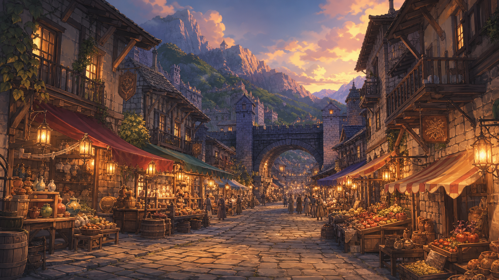
1536x864
A bustling pre-modern stone-paved street inside a walled trading town, two and three story rustic stone-and-timber buildings, market stalls under cloth awnings, hanging shop lanterns, narrow side lanes, a few tiny distant townsfolk, warm lamplight in the early evening. Lively rustic commerce.
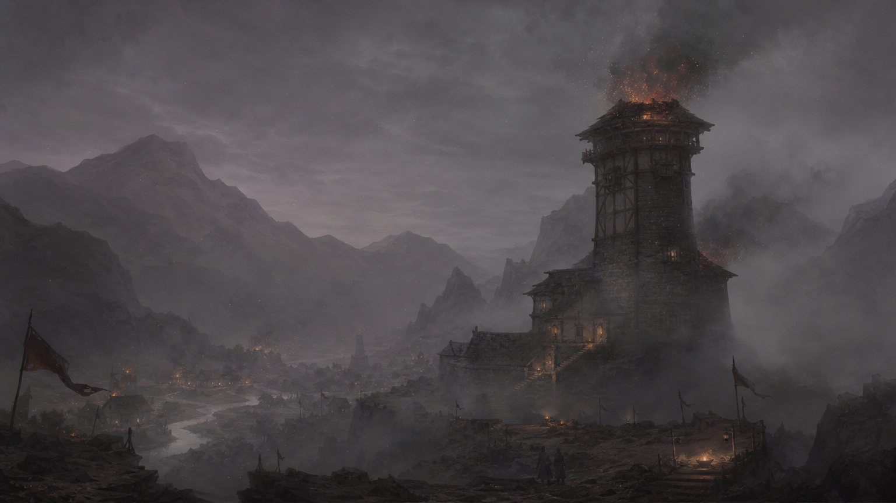
1536x864
The same old stone-and-timber beacon tower at night, but its great flame is guttering and dying down to faint embers, and a creeping grey ash mist is seeping up around its base and drifting across the scene, draining the color toward dull grey. Ominous and sorrowful, the light of the world going out. Keep it ashen and grey, NOT snow or winter.
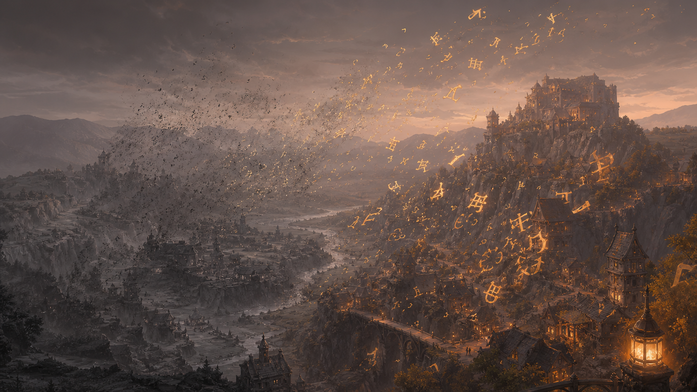
1536x864
An abstract atmospheric depiction of 'the dimming' blight: glowing warm letters and written words floating in the air at the edge of a landscape, but crumbling and dissolving into drifting grey ash and dust, the color draining out of the land behind them toward lifeless grey. Eerie, melancholy, beautiful and wrong. Keep it ashen grey, NOT snow or winter.
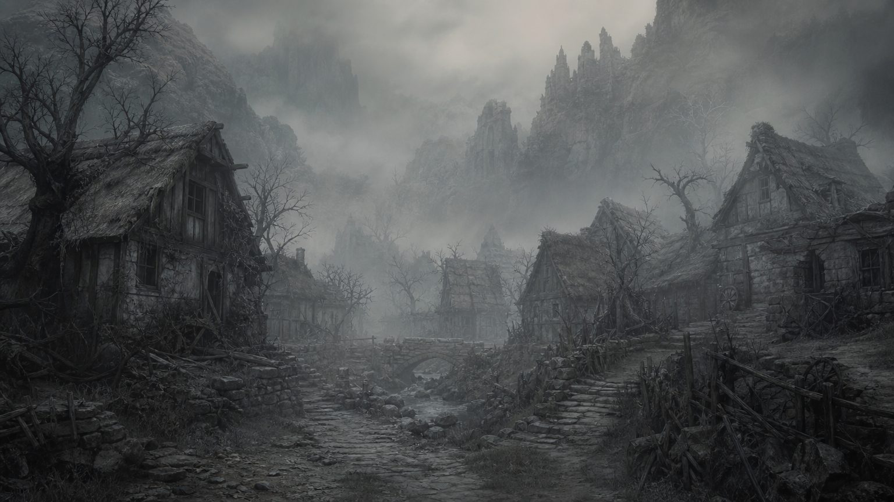
1536x864
A small rustic village that has been swallowed by the grey blight: every cottage, road and tree drained of color to dull ash-grey, no warm light anywhere, thick grey ash mist hanging in the dead silent air, abandoned and forgotten, a place where the lamps have gone out and people have forgotten their own words. Desolate, sorrowful, monochrome grey. NOT snow, NOT winter.
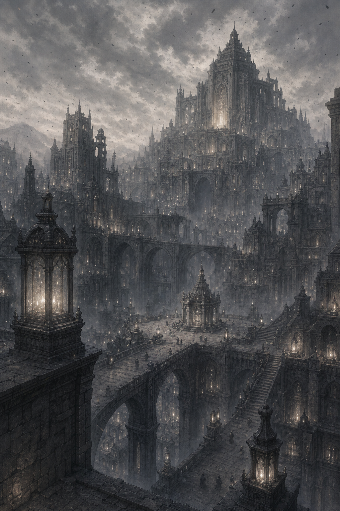
1024x1536
A vast eerie capital city of grey stone where every lamp-word of the world has been hoarded: countless tiny cold faint lamplights gathered and stored in towering grey halls, the whole city drained to ash-grey and choked with hovering grey ash, no warmth, an oppressive lonely cathedral-like grandeur. The hoard that is dimming the world. Ashen grey, NOT snow.
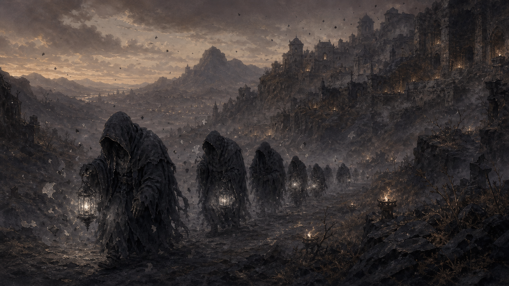
1536x864
An ominous group atmosphere piece of the ash servants: several gaunt hunched hooded figures of ashen desaturated grey, their faces lost in shadow, advancing through grey ash mist along a road at dusk, dull lifeless grey lamp-light flickering weakly around them and shedding grey ash, fragments of dull crumbling ashen letters drifting in the air. Menacing, blighted, drained of color. NOT snow, NOT winter.